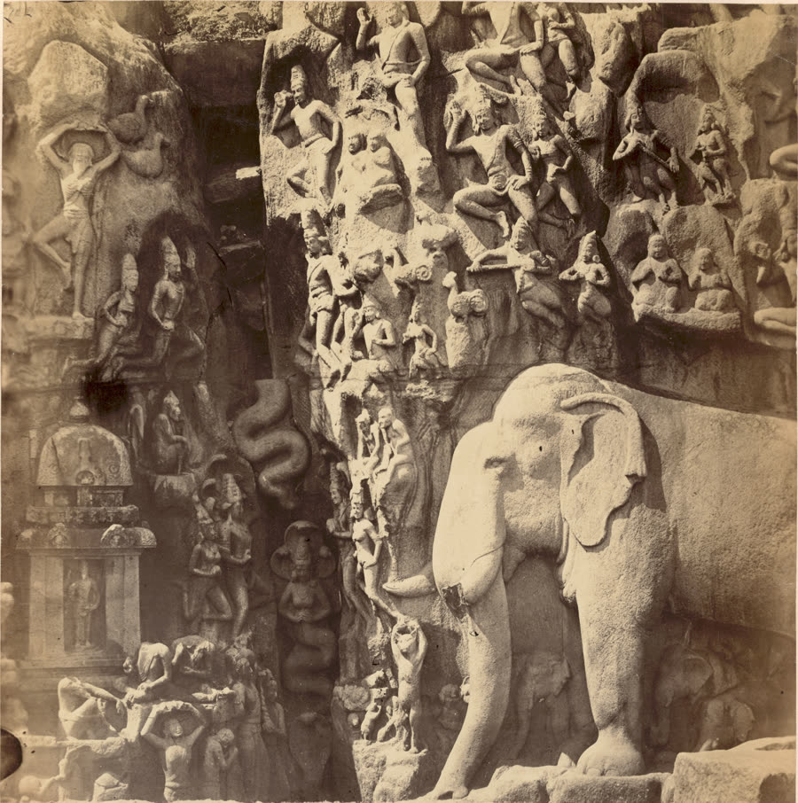

Descent of the Ganges — plate registration QA
Generated by scripts/build-relief-plate.js. Nothing ships until a human confirms the marks below.
Scale set by hand: 0.00135 m/px.
Basis: The great elephant measures 2223 px head-to-foot in the full-resolution file. Fergusson & Burgess 1880 p.156 record the elephants as 'life size'; an adult Asian elephant stands about 3.0 m at the head, giving 3.0/2223 = 0.00135 m/px. QUALITATIVE SOURCE: 'life size' is not a measurement, and head height varies about 2.5-3.2 m, so this scale carries roughly +/-10%. It is still better than the cleft width, which is an unpublished estimate AND not cleanly detectable.
Everything below is drawn at that scale. Check it still looks right.
Check these three things by eye:
- Is the green band actually on the cleft — the dark vertical
channel with the naga figures in it — and not on a shadow?
- Is the red metre grid credible? The great elephant is recorded
as life size by Fergusson (1880), so it should be about
447 px tall here, roughly 3 m.
- Is the orange ground line at the foot of the rock, with the
sand and the pencil marks below it excluded?

14 m
15 m
16 m
17 m
18 m
19 m
| derived | value |
|---|
| scale | 0.00135 m/px (from the cleft width — an estimate) |
| frame covers | 6.04 m of run × 6.08 m of height |
| run window | 13.40 m → 19.44 m from the north end |
| u window | 0.4581 → 0.6646 |
| v window | 0.5355 (top) → 1.0000 (ground) |
| left bare | 13.40 m north, 9.82 m south |
Two things this page does not show, and both must reach the visitor.
The plate is a mirror. In the model u = 0 is at the most-negative z,
which is north. Facing an east-facing wall, north is on the viewer's right — and in
this photograph the shrine (Fergusson's “southern half”) is on the left with the elephants
(his “right half”) on the right, which agrees. So u increases right-to-left and
the rectified image must be flipped horizontally before it becomes the plate.
Perspective is not corrected. One landmark gives translation, not a homography, so
this is an affine fit only. The upper registers recede from the camera and stay that way;
no source records the camera height or standoff that a real rectification would need.